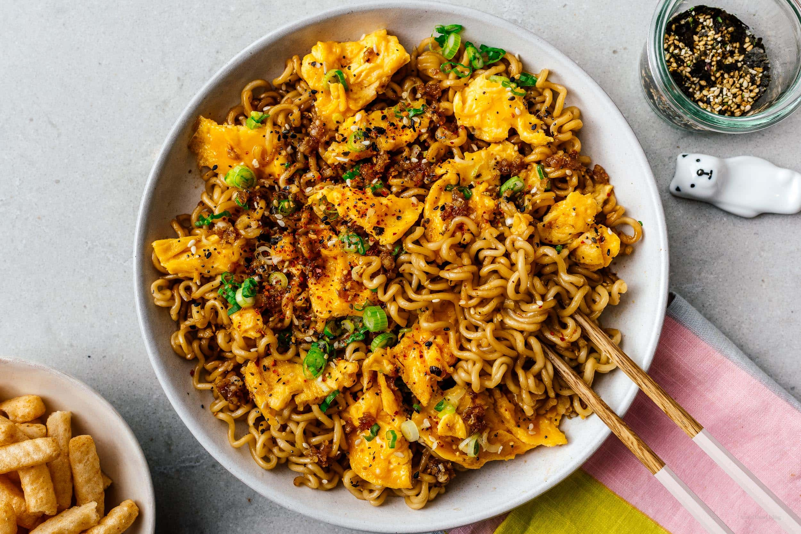

Midnight Noodles
Midnight Noodles

Description
Midnight Noodles is a delicious, easy to make
dish that takes the concept of instant ramen
and adds a little bit more 'oomph' for your
taste buds.
Ingredients
Lets start with what we'll need:
- Instant Ramen of Choice
- Butter
- Garlic
- Crushed Red Pepper
- Brown Sugar
- Soy Sauce
- Egg
Steps
And this is how we'll make it!
- Cook the ramen to al dente
- Drain the ramen
- Heat the butter in a pan on low heat, add garlic and cook until soft
- Stir crushed pepper, brown sugar, and soy sauce into sauce
- Add drained noodles to pan, turn up the heat and toss to coat
- Push the noodles to one side and add an egg to scramble.
- Serve!